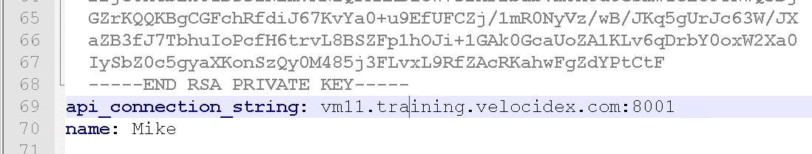

<!-- .slide: class="title " --> # The Velociraptor API ## Controlling the beast! --- <!-- .slide: class="content " --> ## Why an API? * Velociraptor needs to plug into a much wider ecosystem * Velociraptor can itself control other systems * Can already be done by the `execve()` and `http_client()` VQL plugins. * Velociraptor can be controlled by external tools * Allows external tools to enrich and automate Velociraptor * This is what the API is for! --- <!-- .slide: class="full_screen_diagram" --> ### Velociraptor API Server overview  --- <!-- .slide: class="content " --> ## Velociraptor API Server overview * TLS authentication occurs through pinned certificates - both client and server are mutually authenticated and must have certificates issued by Velociraptor's trusted CA. * Execute arbitrary VQL --- <!-- .slide: class="content " --> ## The Velociraptor API * The API is extremely powerful so it must be protected! * The point of an API is to allow a client program (written in any language) to interact with Velociraptor. * The server mints a certificate for the client program to use. This allows it to authenticate and establish a TLS connection with the API server. * By default the API server only listens on 127.0.0.1 - you need to reconfigure it to open it up. --- <!-- .slide: class="content " --> ## Create a client API certificate ``` velociraptor --config server.config.yaml --config server.config.yaml config api_client --name Mike --role administrator api_client.yaml ``` * Update the API connection string if needed.  --- <!-- .slide: class="content " --> ## Grant access to API key * The API key represents a user so you can manage access through the normal user management GUI * To be able to call into the API the user needs the `api` role. * Access to push events to an artifact queue: * Allows an API client to publish an event to one of the event queues. ``` velociraptor --config /etc/velociraptor/server.config.yaml acl grant Mike '{"publish_queues": ["EventArtifact1", "EventArtifact2"]}' ``` --- <!-- .slide: class="content " --> ## Export access to your API * Normally Velociraptor is listening on the loopback interface only * If you want to use the API from external machines, enable binding to all interfaces ```yaml API: hostname: 192.168.1.11 bind_address: 0.0.0.0 bind_port: 8001 bind_scheme: tcp pinned_gw_name: GRPC_GW ``` --- <!-- .slide: class="content small-font" --> ## Using the API to connect to the server. * The velociraptor binary can use the API directly to connect to a remote server: ``` velociraptor --api_config api_client.yaml query "SELECT * FROM info()" ``` * Using Python for example ``` pip install pyvelociraptor pyvelociraptor --config api_client.yaml "SELECT * FROM info()" ``` --- <!-- .slide: class="content small-font" --> ## Schedule an artifact collection * You can use the API to schedule an artifact collection ```sql LET collection <= collect_client( client_id='C.cdbd59efbda14627', artifacts='Generic.Client.Info', args=dict()) ``` * This just schedules the collection - remember the client may be offline for an indefinitely long time! When the client completes the collection results will be available. --- <!-- .slide: class="content " --> ## Waiting for the results * When a collection is done, the server will deliver an event to the `System.Flow.Completion` event artifact * You can watch this to be notified of flows completing. ``` SELECT * FROM watch_monitoring(artifact='System.Flow.Completion') WHERE FlowId = collection.flow_id LIMIT 1 ``` * This query will block until the collection is done! This could take a long time! --- <!-- .slide: class="content " --> ## Reading the results * You can use the `source()` plugin to read the results from the collection. ``` SELECT * FROM source(client_id=collection.ClientId, flow_id=collection.flow_id, artifact='Generic.Client.Info/BasicInformation') ``` * You must specify a single artifact/source to read at a time with the `source()` plugin. --- <!-- .slide: class="content " --> ## Exercise: Put it all together * Write VQL to call via the API to collect an artifact from an endpoint and read all the results in one query. * Encapsulate in a reusable artifact. * Call it from the API.